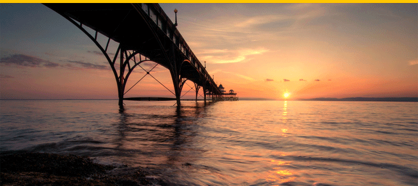

最美的晚霞，最难过的黄昏
爱情是一个轮回，正如四季交替。我们的春天很美好，但我们的夏日已结束，而我们又错过了秋季，现在，天突然间转冷了，冷得把一切都冻住。你的爱情，发生在哪个季节，结束于哪个季节？旅行是一种不治之症，一旦感染了就再也无法摆脱，欲望在心里隐隐作痛，迈开脚步才能获得短暂的身心安宁。
阅读更多爱情是一个轮回，正如四季交替。我们的春天很美好，但我们的夏日已结束，而我们又错过了秋季，现在，天突然间转冷了，冷得把一切都冻住。你的爱情，发生在哪个季节，结束于哪个季节？旅行是一种不治之症，一旦感染了就再也无法摆脱，欲望在心里隐隐作痛，迈开脚步才能获得短暂的身心安宁。
阅读更多爱情是一个轮回，正如四季交替。我们的春天很美好，但我们的夏日已结束，而我们又错过了秋季，现在，天突然间转冷了，冷得把一切都冻住。你的爱情，发生在哪个季节，结束于哪个季节？旅行是一种不治之症，一旦感染了就再也无法摆脱，欲望在心里隐隐作痛，迈开脚步才能获得短暂的身心安宁。
阅读更多